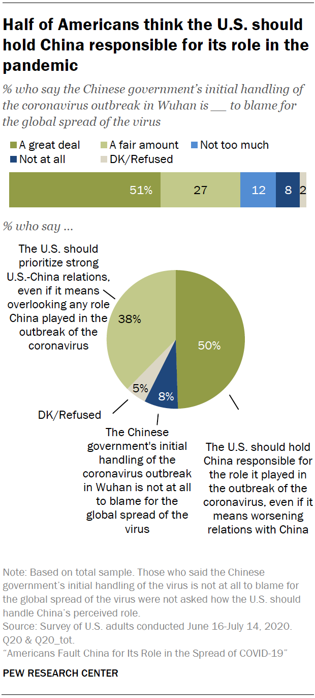
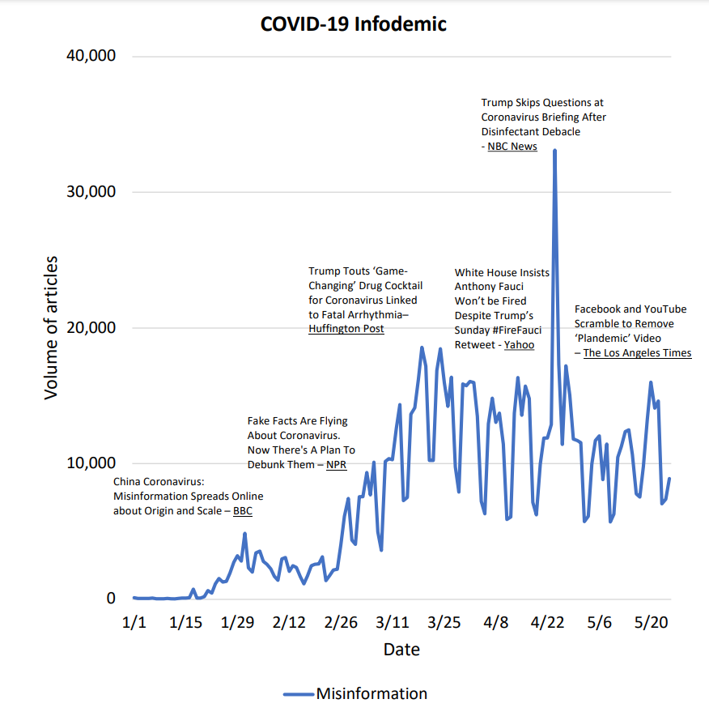
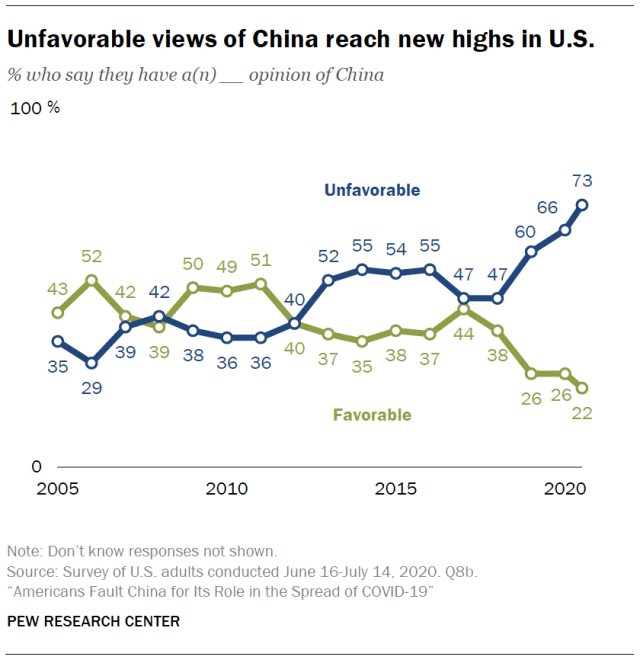

Global Politics
China: Protected by force majeure?
Anju Felix - Fall 2020

Reported from Pew Research Institute, more half of Americans want to see China held responsible for the coronavirus pandemic, even if it results in relations worsening.11
Force majeure,1 in French, translates to “superior force”. In a legal setting, it may encompass events like natural disaster, dishonorable acts of man, and even the wrath of God himself. In the world of international law, force majeure recognizes that unforeseeable events could prevent states from fulfilling their obligations on the international stage. Summarized in Latin, “nemo tenetur ad impossibilia” where “Nobody must keep a commitment to do impossible things”. The question remains, however, for the worldly toll of the COVID-19 pandemic, is China, as the location of onset, protected by force majeure?
The coronavirus outbreak began in Wuhan, China, in a seafood market where cluster cases of pneumonia had initially been confirmed on December 31, 2019.2 On January 4th of the new year, the World Health Organization confirmed that investigations were in place to identify the cause of these perplexing clusters.3 Come January 9th, it was finally confirmed that the outbreaks had been caused by a novel coronavirus.4 In the days following, the genetic sequences of the virus had been provided by the People’s Republic of China,5 and the WHO released a series of protocols related to management of a new disease outbreak. From here, human-to-human transmission was confirmed on January 22nd, the same day the USA confirmed their first case of the novel virus.6
From just a few cases in Wuhan, the epidemic has spread immeasurably to 46,849,292 cases. But of course, if China is placed on trial, the actions of other countries would be open for review. Considering the communicability of such a contagious disease, various countries could be found in contempt of contributory negligence, most prominently the USA. Under this law tort rule, if the plaintiff contributes in some way to cause the accident, they can still be held accountable irrespective of if the defendant plays an even worse role.7 In the US during the last week alone, campaign rallies of the current administration have resulted in more than 30,000 new cases.8 Although this is the most recent evidence for contributory negligence, one could argue that the Trump administration ought to also be prosecuted for malicious wrongdoing in their handling of the pandemic. In a review of millions of articles and media, President Donald Trump was found to be the greatest contributor to the “infodemic” of 2020, sharing “miracle cures” to coronavirus whilst simultaneously downplaying the pandemic by misleading the public to reap political capital.9 In effect, these accusations against the US could make creating a case against China very difficult.

The graph is from the aforementioned media study done by Cornell and displays the volume of articles which include information with various headlines marking significant dates, correlating to spikes in misinformation.9
Regardless, the question remains, can a country be forced to pay reparations for the loss of life in another country if contributory negligence is ignored. Although a country can be forced to do such, by reviewing historical occurrences, there is precedent they could use to avoid paying reparations. Most glaring is America’s bombing of Japan during WW2. “Japan’s Air Defense General Headquarters reported that out of 206 cities, 44 had been almost completely wiped out, while 37 others, including Tokyo, had lost over 30 percent of their built-up areas.12 Almost 2 million military personnel and civilians had been killed. Another 8 million were wounded or homeless. The destruction was so complete, historian Edwin Reischauer reminds us, that Japan, experiencing total military and industrial defeat for the first time in its history, took over 10 years to regain its pre-war productive capacity”. Despite the mass destruction the US ensued on Japan, neither party demanded reparations primarily due to their amicable political climate following the war.
This greatly contrasts the extreme political polarization in present day US-China relations. Among US adults, 73% of US adults hold unfavorable views of China, a figure that’s risen 7 percentage points since the onset of the pandemic.11 The Trump campaign's rhetoric of “holding China accountable” is certainly instrumental in this shift.12 Due to this year being an election year, in addition to already being a campaign slogan, the motive of pushing such a harsh case against China despite force majeure must be questioned given the contrasting historical and present political climates.

Reported from Pew Research Institute, negative sentiments against China considerably increased during the year of 2020 to the highest it has ever been!.11
Despite considering contributory negligence and historical precedents, even if China is in fact found to be negligent in their handling of the coronavirus, the actual process of “holding China accountable” is unclear. On the international stage, the only formal paths of controlling the behavior of nations are via diplomacy, war, and sanctions.13 Unfortunately, none of these pathways would necessarily lead to the monetary compensation our administration demands. There are, however, instances where disputes had directly been litigated in the US civil courts, effectively ignoring a nation’s given sovereign immunity. However, if sovereign states take the time to litigate each other in civil court whilst simultaneously trying to enforce whatever judgement is reached, this could create additional havoc on the international stage, as seen in the US case Ashton v. Kingdom of Saudi Arabia in relation to the 9/11 terrorist attack, argued 15 years after the fact!14
In conclusion, due to protections provided by force majeure, contributory negligence on the part of the US, and the possibility of political climate influencing the case, China may not be held financially responsible for the Coronavirus pandemic and even if so, there would no way to acquire reparations anyway. Cries against China are merely to distract and deflect away from the domestic mishandling of the coronavirus pandemic. Rather than pointing fingers and spreading negative, racist sentiments against a single nationhood, perhaps the US and other actors ought to create a more cohesive and collaborative world stage in which the interest of all citizens are represented and able to be respected. The fact is, the entire world has been subjected to a reckoning and fundamental shift that undermines humanity at large, exposing the true, shameful, Draconian nature of our governance.
References
[1] Force Majeure. (2021). Retrieved 7 January 2021, from Cornell Law
[2] Pneumonia of unknown cause – China. (2021). Retrieved 7 January 2021, from World Health Organization.
[3] WHO Status from Twitter
[4] Organization, W. (2020). Novel Coronavirus (2019-nCoV): situation report, 3. World Health Organization.
[5] WHO Status from Twitter
[6] Organization, W. (2020). Novel Coronavirus (2019-nCoV): situation report, 3. World Health Organization.
[7] Contributory Negligence. (2021). Retrieved 7 January 2021, from Cornell Law
[8] Bernheim, B., buchmann, N., Freitas-Groff, Z., & Otero, S. (2020). The Effects of Large Group Meetings on the Spread of COVID-19: The Case of Trump Rallies. SSRN Electronic Journal. doi: 10.2139/ssrn.3722299
[9] Coronavirus misinformation: quantifying sources and themes in the COVID-19 ‘infodemic’ (2021). Retrieved 7 January 2021, from Alliance For Science
[10] Studies in Intelligence - Google Play. (2021). Retrieved 7 January 2021, from Google Books
[11] Americans Fault China for Its Role in the Spread of COVID-19. (2020). Retrieved 7 January 2021, from Pew Research
[12] Why Asian-American racism is rampant during the coronavirus | Penn Today. (2020). Retrieved 7 January 2021, from Penn Today
[13] International Conflict Resolution After the Cold War. (2000). doi: 10.17226/9897
[14] Kreindler Files 9/11 Terror Lawsuit Against Saudi Arabia | Kreindler & Kreindler LLP | National. (2021). Retrieved 7 January 2021, from Kreindler